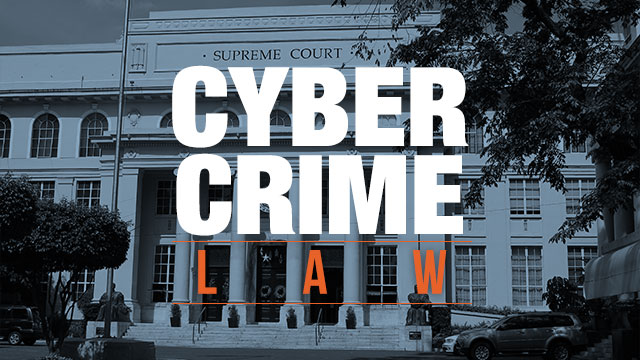

The rapid growth of the internet and digital technology has brought enormous benefits to Filipino society, but it has also opened the door to a new and growing category of crime. Cybercrime affects individuals, businesses, and government institutions alike, causing financial losses, privacy violations, and serious harm to victims. To address these threats, the Philippine government has enacted laws specifically designed to combat criminal activity in the digital space. Understanding these laws is essential for every Filipino internet user, not only to know their rights but also to understand the legal consequences of harmful online behavior.
Republic Act 10175: The Cybercrime Prevention Act of 2012
The primary law governing cybercrime in the Philippines is Republic Act 10175, also known as the Cybercrime Prevention Act of 2012. Signed into law on September 12, 2012, by President Benigno Aquino III, this landmark legislation was the country's first comprehensive legal framework specifically addressing criminal acts committed through or with the use of information and communications technology. The law was enacted in response to the growing number of cyber-related offenses being reported across the country and the recognized need for a modern legal tool to address them. RA 10175 defines the offenses, sets the corresponding penalties, and establishes the government bodies responsible for preventing, investigating, and prosecuting cybercrime in the Philippines.
Offenses Covered Under the Law
RA 10175 covers a broad range of offenses grouped into three main categories. The first category consists of offenses against the confidentiality, integrity, and availability of computer data and systems. These include illegal access, illegal interception, data interference, system interference, misuse of devices, and cyber-squatting. The second category covers computer-related offenses such as computer-related forgery, computer-related fraud, and computer-related identity theft. The third and most widely discussed category is content-related offenses, which include cybersex, child pornography, unsolicited commercial communications or spam, and libel committed through a computer system or any other similar means. The inclusion of online libel in particular generated significant public debate and was challenged before the Supreme Court, which ultimately upheld its constitutionality while striking down certain provisions of the law.
Penalties and Punishments
One of the defining features of RA 10175 is that it generally imposes penalties one degree higher than those provided under the Revised Penal Code for the same or similar offenses committed offline. This means that committing a crime through a computer or the internet is treated more severely under Philippine law than committing the same act in the physical world. For example, online libel carries a penalty of imprisonment ranging from six years and one day to twelve years, significantly higher than the penalty for traditional libel. Offenses involving child pornography carry some of the heaviest penalties under the law, with imprisonment of up to reclusion perpetua or life imprisonment in the most serious cases. The law also provides for the forfeiture of assets and the payment of damages to victims.
Law Enforcement Agencies
The enforcement of cybercrime laws in the Philippines falls under the jurisdiction of two primary agencies. The National Bureau of Investigation operates a Cybercrime Division tasked with receiving complaints, conducting investigations, and building cases against cybercriminals for prosecution. The Philippine National Police, through its Anti-Cybercrime Group, performs similar functions and also carries out operations such as entrapment and takedowns targeting online illegal activities. These agencies work closely with the Department of Justice, which oversees cybercrime prosecution, and with international partners such as Interpol and foreign law enforcement bodies to address crimes that cross national borders. The Office of Cybercrime under the Department of Justice also plays a central coordinating role in the country's anti-cybercrime efforts.
Rights of the Accused and Controversies
While RA 10175 is designed to protect citizens from cybercrime, it has also been the subject of controversy regarding the protection of civil liberties. Critics and human rights advocates raised concerns that certain provisions of the law, particularly those on online libel and the broad powers granted to law enforcement for surveillance and data collection, could be used to suppress freedom of expression and target journalists, bloggers, and ordinary citizens. The Supreme Court of the Philippines, in a 2014 ruling on a consolidated petition challenging the law, struck down several provisions while upholding others, including the online libel provision. The accused in cybercrime cases retain their constitutional rights, including the right to due process, the right to counsel, and the right to be presumed innocent until proven guilty, the same as in any other criminal proceeding.
Other Related Laws
Beyond RA 10175, several other Philippine laws address aspects of cybercrime and digital safety. Republic Act 9995, or the Anti-Photo and Video Voyeurism Act of 2009, criminalizes the unauthorized recording, reproduction, and distribution of images or videos of a sexual nature without the consent of the person involved. Republic Act 11313, known as the Safe Spaces Act or Bawal Bastos Law, covers online gender-based sexual harassment. Republic Act 9208, as amended by RA 10364, addresses online trafficking in persons. Republic Act 10173, or the Data Privacy Act of 2012, protects the personal information of individuals and imposes obligations on organizations that collect and process personal data. Taken together, these laws form a broader legal framework that addresses the many dimensions of harmful and criminal behavior in the digital environment.
Challenges in Cybercrime Enforcement
Despite the existence of these laws, enforcing cybercrime legislation in the Philippines remains a significant challenge. Cybercriminals frequently operate anonymously and across multiple jurisdictions, making investigation and prosecution difficult. Many victims do not report cybercrimes due to lack of awareness of their legal options, fear of retaliation, or distrust in the legal process. The rapid pace of technological change also means that laws can quickly become outdated, failing to address new forms of criminal activity such as those involving artificial intelligence, deepfakes, or emerging online platforms. Limited resources and the need for highly specialized technical expertise within law enforcement agencies further complicate the government's ability to respond effectively. Continuous updating of legislation, investment in digital forensics capabilities, and public education remain critical priorities for strengthening the country's defenses against cybercrime.
Conclusion
Cybercrime laws in the Philippines, led by the Cybercrime Prevention Act of 2012, represent a serious and necessary effort by the government to address criminal activity in the digital age. These laws define a wide range of offenses, impose significant penalties, and establish the institutions responsible for investigation and prosecution. At the same time, ongoing debates about civil liberties, enforcement challenges, and the ever-evolving nature of technology remind us that legal frameworks must continue to develop alongside the threats they are designed to address. For every Filipino internet user, awareness of these laws is not just a matter of legal literacy but a vital part of being a responsible and informed citizen in an increasingly connected world.